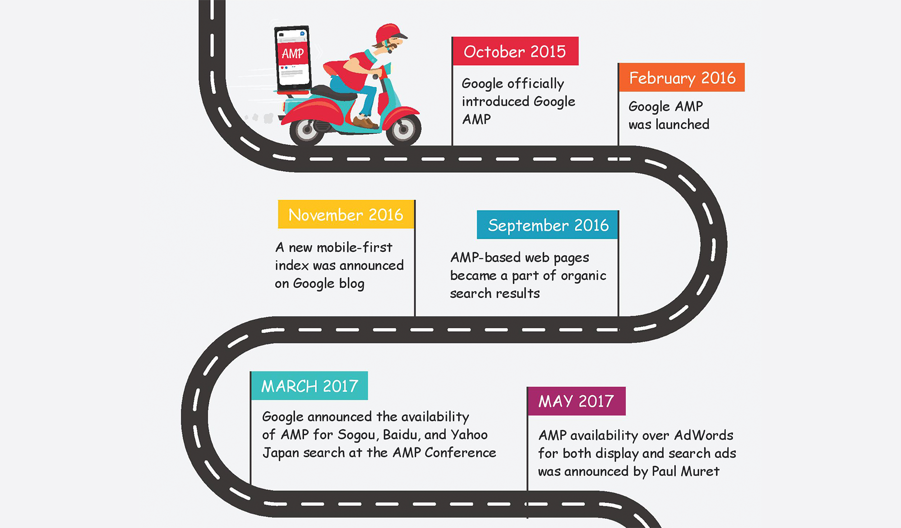
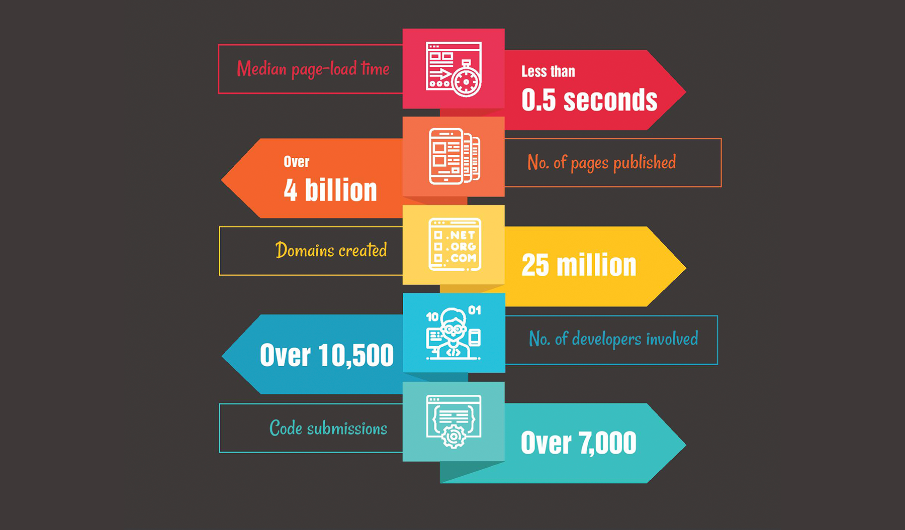
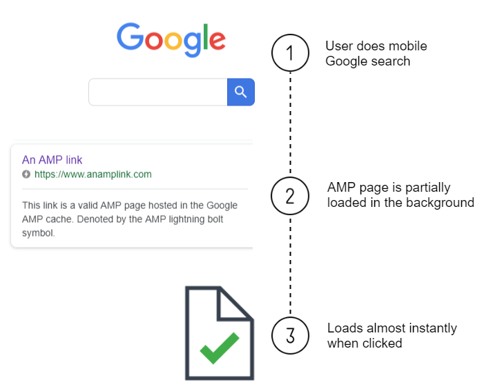
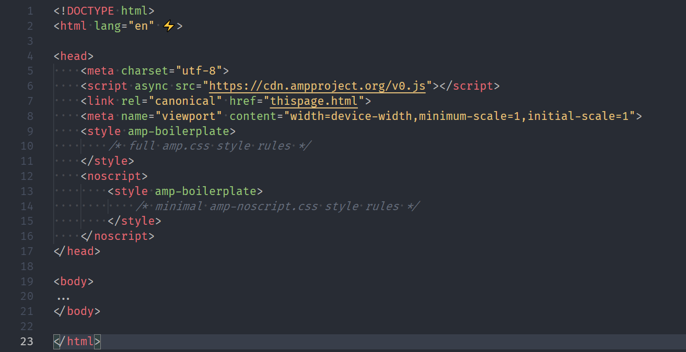
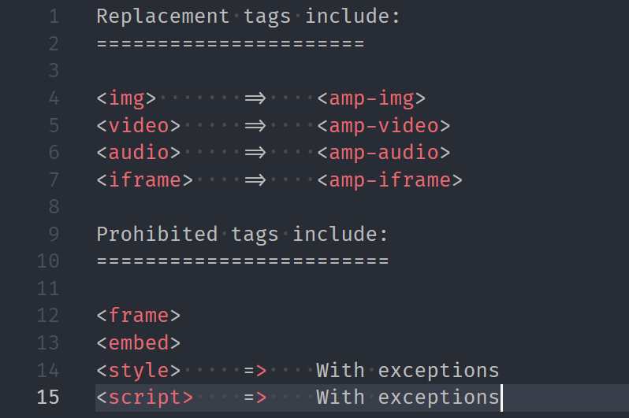
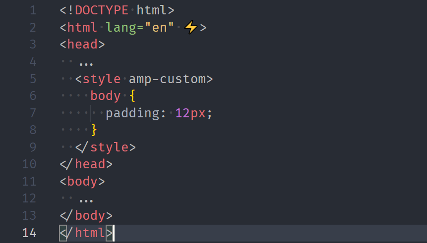
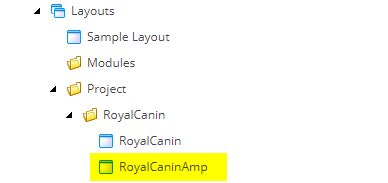
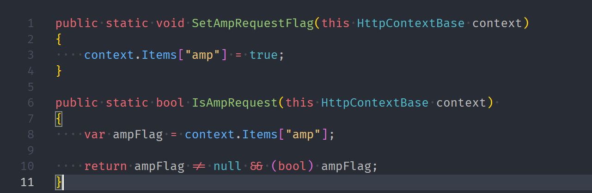
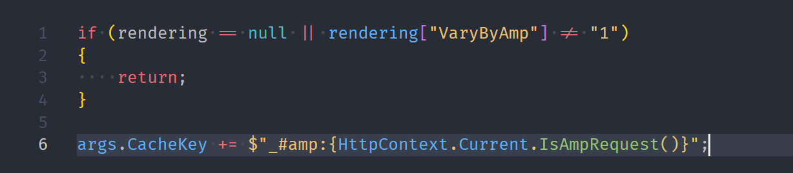

What is AMP?
Accelerated Mobile Pages
AMP is an open source framework developed by Google in collaboration with Twitter.
AMP create better, faster experiences on the mobile web.
How AMP looks like on Google’s SERP
AMP Timeline
Impact of AMP project till now
How does AMP work?
User flow
Benefits of AMP
- Faster loading page for mobile users
- Improved search engine ranking
- Increased visibility for Publishers
Disadvantages of AMP
- JavaScript & CSS Limitations
- Tracking Problems
- You must use a stripped down, simpler version of your site and lose core elements
- Implementation is not straightforward
The rules
1. Boilerplate
2. HTML
3. CSS
4. JS
The script tag can only be used to store data (state)AMP components library

How to validate AMP pages

#development=1 to
URL: for example,
http://localhost:8000/example.amp.html#development=1.
and check Chrome DevTools console


Validate AMP using Google Search console
DemoAMP examples
Royal Canin Website AMP'ing
PART 1 - EASY
1. Add a field "Has AMP layout"

2. Add a special layout - .cshtml + Sitecore item
3. Add meta link on pages only in the classic mode - !this.HttpContext.IsAmpRequest()
4. Add one more parameter for rendering cache -
5. Add help methods:
Inline Image component

PART 2 - The affected Sitecore pipelines
httpRequestBegin
-
add custom item resolver (after the standard ItemResolver)
- set the flag to the context
(call the help method - args.HttpContext.SetAmpRequestFlag())
mvc.buildPageDefinition
replace the standard "ProcessXmlBasedLayoutDefinition" processor
mvc.renderRendering
apply "Vary by AMP" cache setting
renderField
replace the standard "GetFieldValue" to process images in RTE fields -
Google Page Speed
of AMP page
Demo